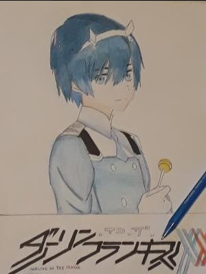
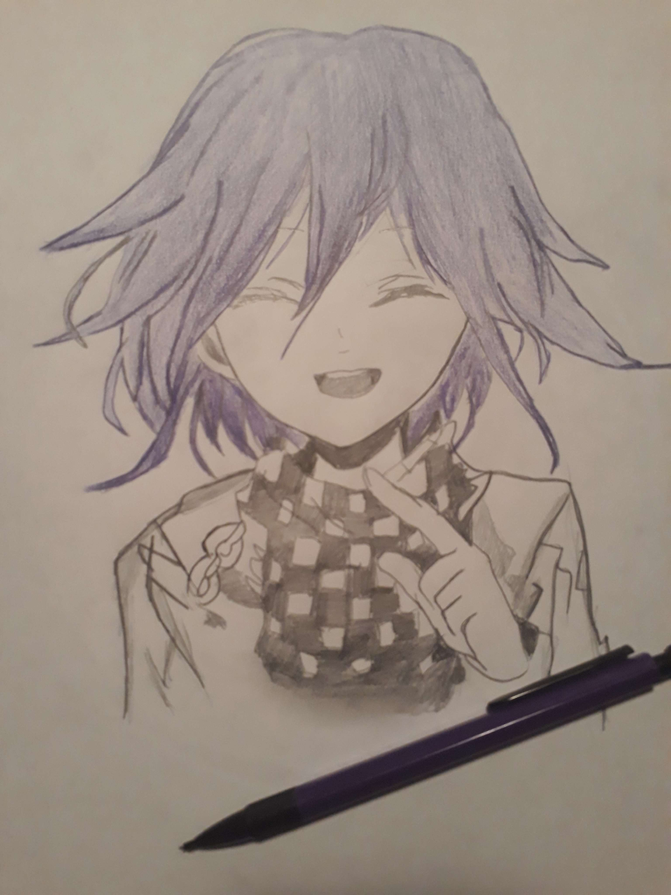
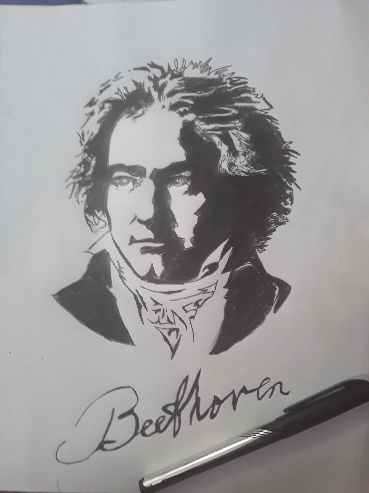
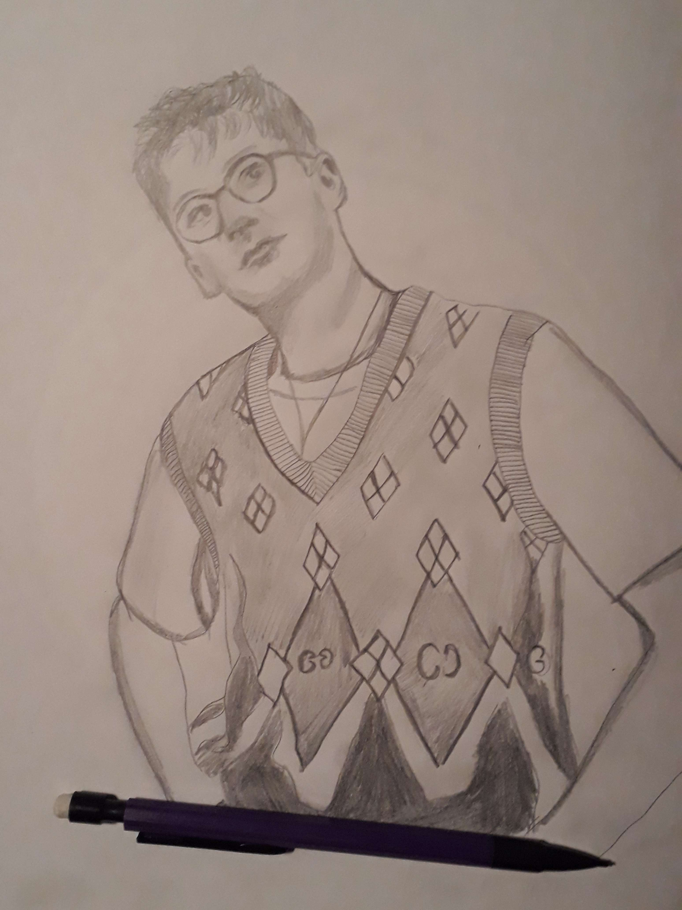
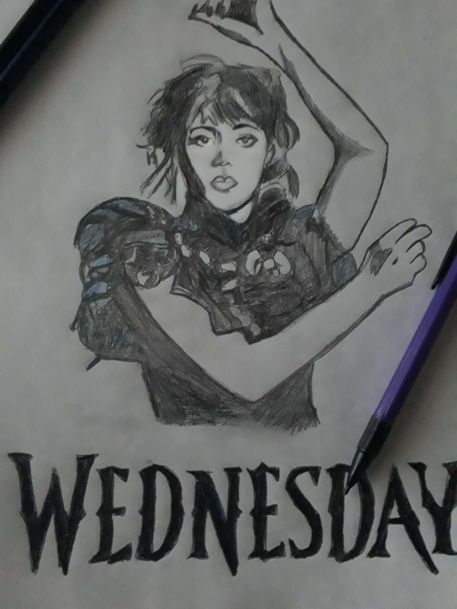
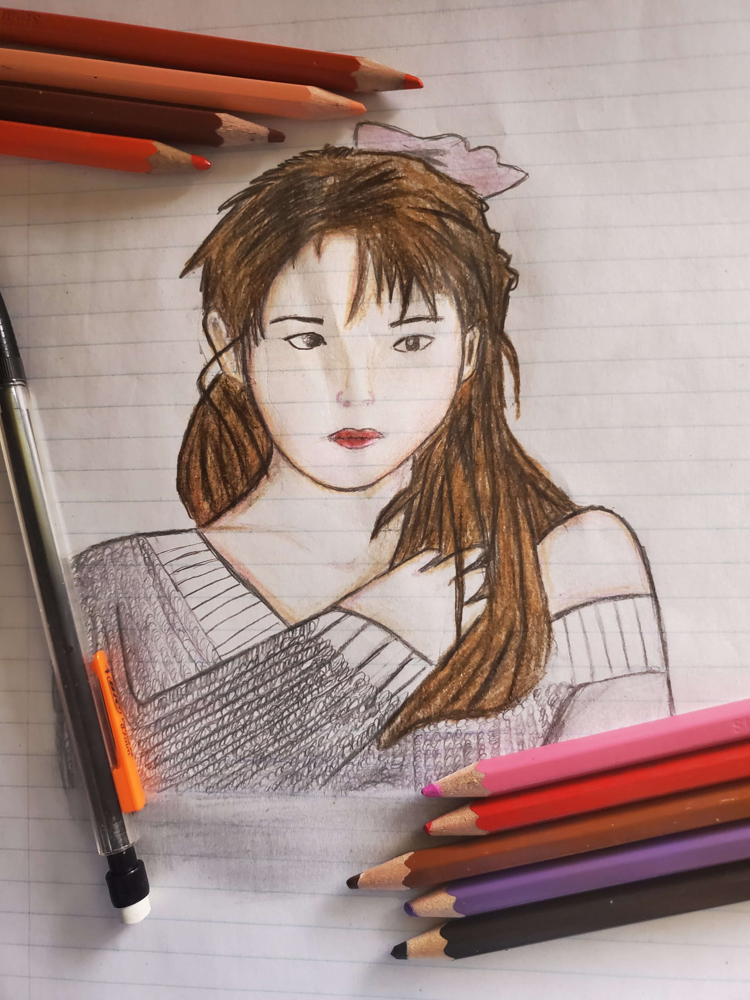

My Artworks
Explore my collection of digital art pieces inspired by anime, musicians, and historical figures.

Hero
A beautiful digital illustration of Hero from the anime series "Darling in the Franxx". Capturing her elegant pose and serene expression with detailed shading.

L Lawliet
A striking portrait of L from "Death Note". Perfectly capturing his mysterious personality and iconic slouching posture with meticulous detail.

Kokichi Ouma
A mischievous representation of Kokichi Ouma from "Danganronpa V3". Capturing his playful yet mysterious nature with expressive artwork.

Ludwig van Beethoven
A classical portrait of the legendary composer Ludwig van Beethoven. Rendered with historical accuracy and artistic flair, capturing his intense gaze.

Dave Bayley
A stylized portrait of Dave Bayley, the talented frontman of Glass Animals. Capturing his creative energy with vibrant artistic expression.

Harry Styles
A contemporary portrait of Harry Styles, the English singer-songwriter. Rendered with modern styling and artistic interpretation.

Wednesday Addams
A gothic-inspired illustration of Wednesday Addams from "The Addams Family". Perfectly capturing her dark aesthetic and stoic personality.

IU (아이유)
A beautiful digital portrait of IU, the acclaimed South Korean singer and actress. Capturing her elegance and artistic presence with detailed shading.
Browse My Collection
L - Death Note
Harry Styles - English singer
About My Artwork
I create hand-drawn digital art that captures the essence of my subjects. Each piece is carefully crafted using digital tools to bring characters, musicians, and inspiring figures to life. My artwork reflects a blend of anime inspiration, classical portraiture, and contemporary styles.
From anime characters to historical figures and modern musicians, I love exploring different artistic styles and mediums. Every artwork tells a story and represents countless hours of creative effort and dedication to the craft.